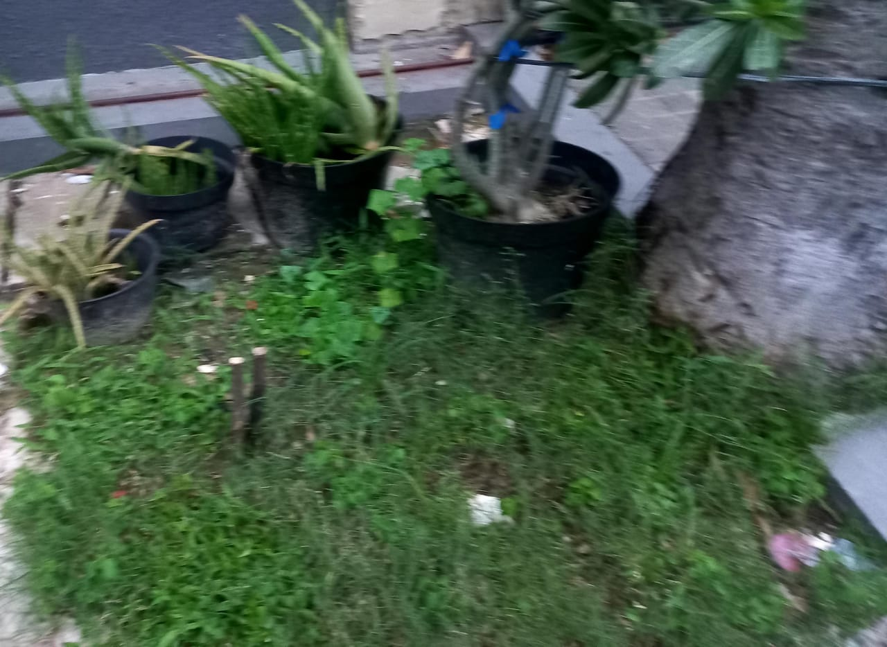

Akibat dari aktivitas manusia seperti pembakaran minyak
bumi, gas alam, dan batu bara, menyebabkan terjadinya pemanasan yang dipantulkan kembali ke Bumi sehingga menyebabkan mencairnya
es dikutub, kekeringan, kabut asap, iklim yang tidak menentu, dan pemicu kebakaran, fenomena tersebut
dipanggil dengan nama Pemanasan Global. Efek yang ditimbulkan dari Pemanasan Global dapat menyebabkan
rusaknya bumi, oleh karena itu, kita sebagai manusia ciptaan tuhan yang berakal harus menjaga apa yang telah diberikan
oleh yang diatas
Untuk keberlangsungan Bumi, dan anak cucu kita, Marilah kita bersama-sama bangkit, dan menjaga Bumi
dengan dimulai dari hal kecil yaitu:

Tanaman.
1. Menggunakan Transportasi Umum & Sepeda
Dengan transportasi umum & sepeda dapat membantu mengurangi emisi gas rumah kaca, hal ini
sangat membantu, khususnya dipakai di kota kota besar seperti jakarta, bila
ini di terapkan, maka polusi, emisi gas rumah kaca, pemanasan global, suhu akkan semakin
berkurang
2. Melakukan Reboisasi
Dengan satu pohon yang berukuran 10 meter dapat menghasilkan Oksigen 207.33 Kg/hari,
maka dari itu dengan melakukan reboisasi, apalagi secara besar besaran dapat membantu
mengurangi kerusakan Bumi, dan emisi gas rumah kaca
3. Hemat Air
Pemborosan Air menjadii penyebab kerusakan Bumi, karena pemanasan global, sumber-sumber air di dalam tanah akan menguap. Selain itu, sumber-sumber air tersebut juga akan tercemar sehingga krisis air bersih tidak dapat dihindari.